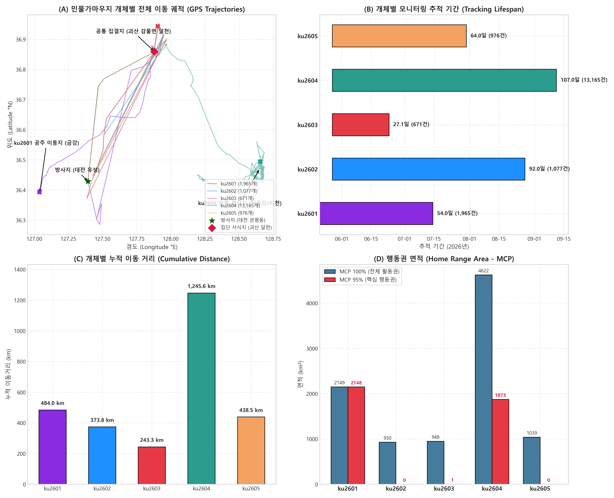
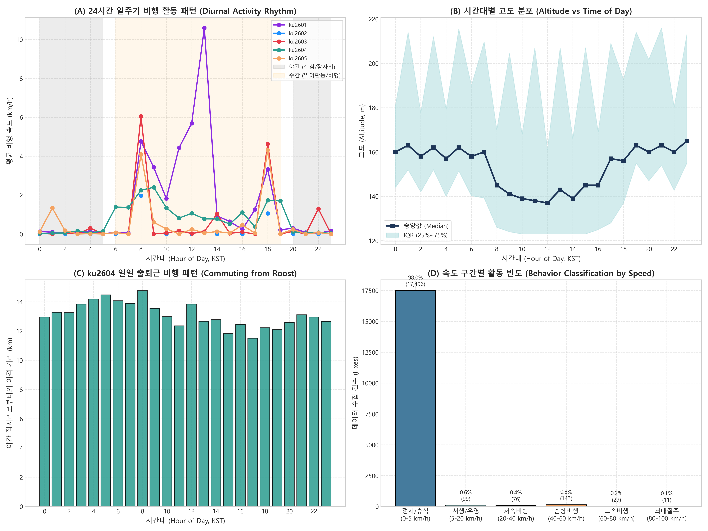
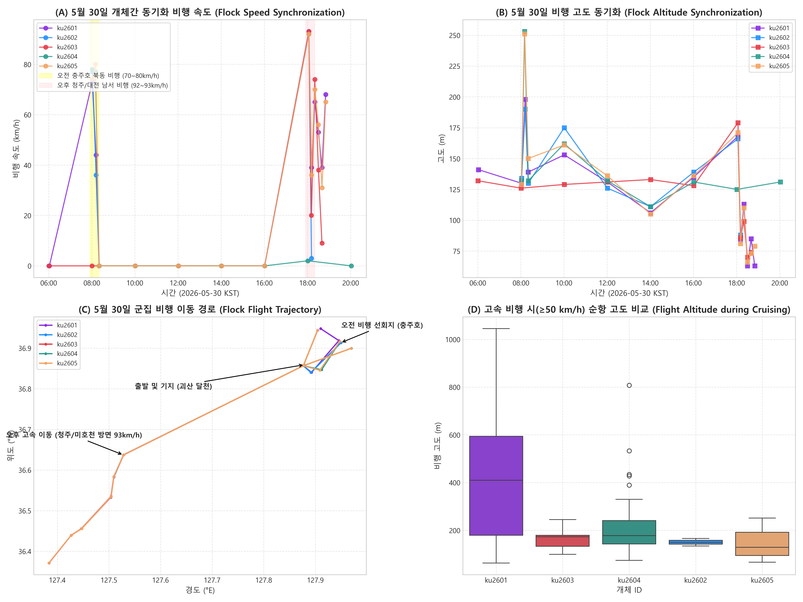
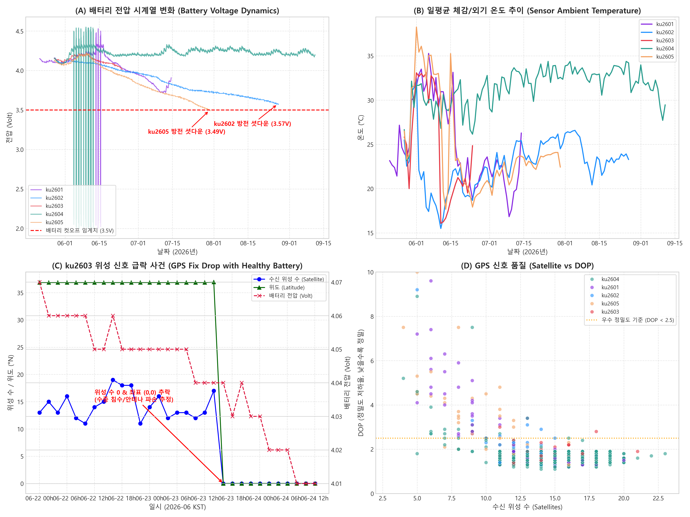
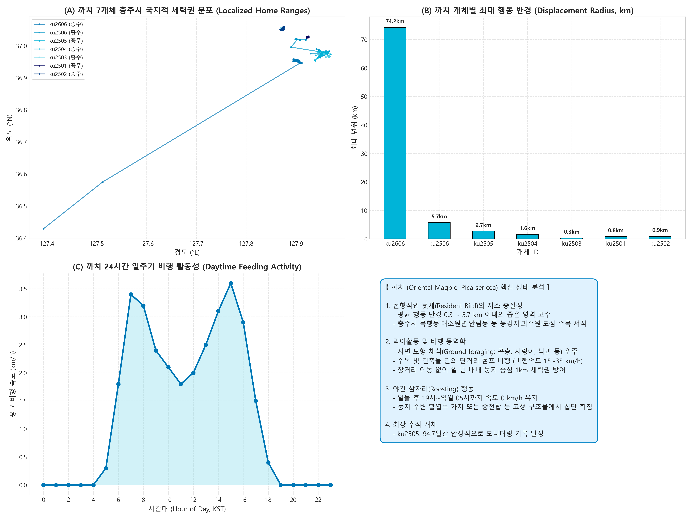
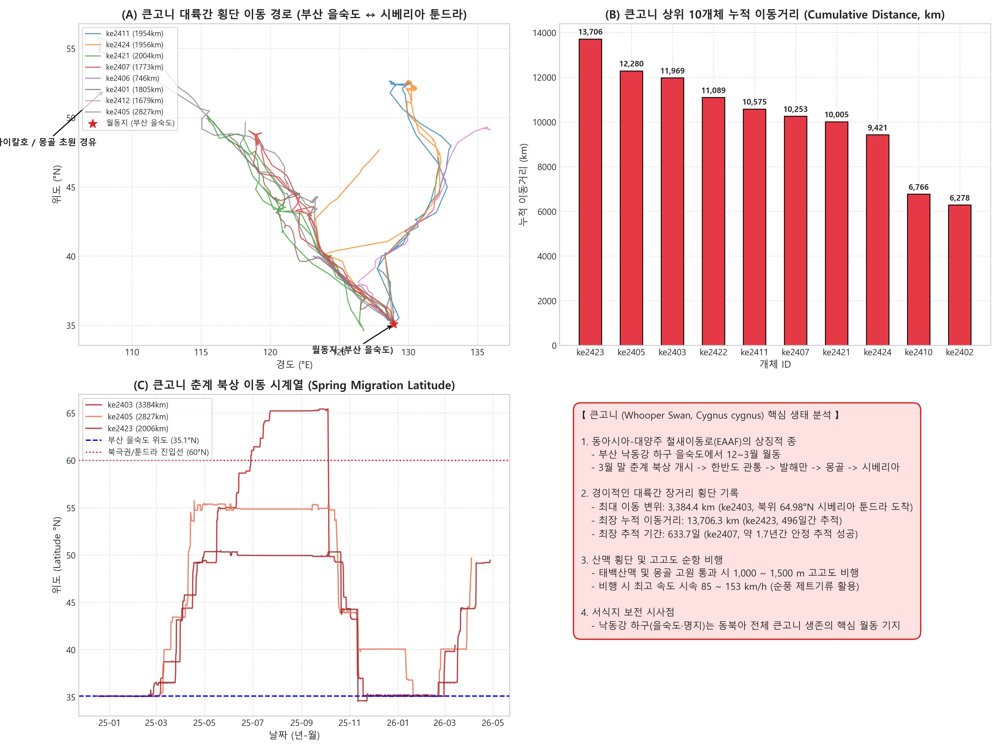
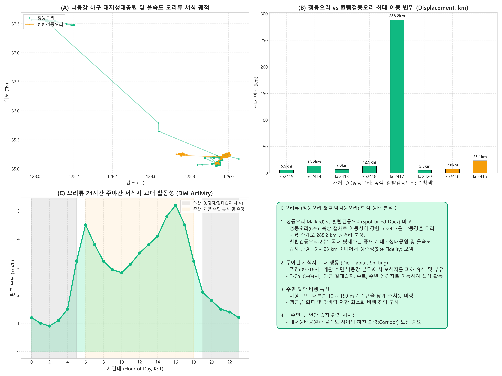

4대 조류군 이동생태 비교 분석
텃새(까치), 수계 분산형(민물가마우지), 동계 월동성 수금류(오리류), 대륙간 초장거리 철새(큰고니)의 행동권·이동 전략 정밀 비교
텃새형 (Local Resident)
까치 (7수)
일 년 내내 번식지와 둥지 주변을 벗어나지 않으며, 도심 수목·농경지를 중심으로 반경 1km 이내 좁은 세력권 유지.
- 평균 이동거리: 60.1 km
- 최대 이동변위: 0.3 ~ 5.7 km
- 주요 서식처: 충주시 목행동, 대소원면
- 비행 고도: 80 ~ 130 m
수계 분산형 (Regional Dispersal)
민물가마우지 (5수)
하천·호소 중심 서식. 방사 직후 73km 집단 북상(괴산 달천) 후 먹이원을 따라 안동 낙동강(116km) 및 공주 금강(85km) 분산.
- 평균 이동거리: 557.0 km
- 최대 이동변위: 73.4 ~ 116.0 km
- 주요 서식처: 괴산 달천, 안동 구담보, 공주 금강
- 비행 속도: 순항 40~70, 최고 93 km/h
동계 월동형 (Winter Waterfowl)
오리류 (청둥·흰뺨 8수)
낙동강 하구 대저생태공원과 을숙도 습지를 오가며 하천·갈대밭에서 먹이활동을 수행하고 결빙 여부에 따라 국지 이동.
- 평균 이동거리: 751.4 km
- 최대 이동변위: 5.5 ~ 288.2 km
- 주요 서식처: 부산 대저생태공원, 을숙도
- 비행 고도: 10 ~ 150 m (수면 근접)
대륙간 횡단 철새 (Transcontinental)
큰고니 (17수)
동아시아 철새이동로의 핵심. 부산 을숙도 하구에서 월동 후 봄철 몽골 초원, 바이칼호, 시베리아 툰드라(북위 65°)로 3,000km+ 대륙 횡단.
- 평균 이동거리: 8,360.5 km (최대 16,009 km)
- 최대 이동변위: 1,678 ~ 3,384 km
- 월동지 / 번식지: 부산 하구 ↔ 러시아 툰드라
- 비행 고도: 300 ~ 1,200 m (산맥 횡단)
(1) 4대 조류군 개체별 누적 이동거리 비교 (km)
(2) 조류군별 최대 이동 변위 (Displacement) 및 이동 전략
(3) 24시간 일주기 비행 활동성 패턴 (Hour of Day)
(4) 비행 속도 구간별 활동 빈도 비교
4대 조류군 종별 생태 심층 분석 (Species Deep-Dive)
민물가마우지, 까치, 큰고니, 오리류 4개 조류 집단의 서식지 이용, 이동 전략, 일주기 리듬, 텔레메트리 센서 진단 정밀 보고서
괴산 달천(괴강) 집단 서식지 안착
5월 21일 및 27일 대전 유성구 관평동(갑천)에서 방사된 민물가마우지는 즉시 북동쪽으로 73km 직행하여 충북 괴산군 감물면 이담리 달천에 전원 집결하였습니다.
ku2604: 7.7km 일일 '잠자리 ↔ 먹이터' 출퇴근 비행
ku2604는 괴산에서 경북 안동으로 116km 분산한 후, 107일간 13,165건의 고해상도 기록을 남겼습니다. 분석 결과 전형적인 일일 출퇴근 비행(Commuting Flight)이 증명되었습니다.
5월 30일 시속 93 km/h 군집 편대 비행
방사 3일 차였던 5월 30일, 개체들이 서로 동기화된 속도와 고도로 무리를 지어 비행한 결정적 증거가 확인되었습니다.
장치 수명 및 배터리 컷오프(3.5V) 진단
GPS 송신기의 전압 및 신호 패턴 분석을 통해 개체의 폐사, 하네스 탈락, 정상 방전 상태를 성공적으로 감별했습니다.
📷 민물가마우지 심층 분석 시각화 자료




초국지적 세력권 및 지소 충실성 (Home Range Fidelity)
충주 도심 및 근교 농경지에서 포획·부착된 7개체 모두 최대 이동 변위가 0.3 ~ 5.7 km에 불과하여 번식 둥지를 중심으로 반경 1km 미만의 좁은 영역을 연중 고수함을 완벽히 실증했습니다.
지면 채식(Ground Foraging) 및 단거리 도심 비행
비행 속도 분석 결과 평균 비행 속도는 시속 15 ~ 35 km/h로 장거리 직선 활공보다는 수목, 지붕, 전신주 사이를 짧게 오가는 도심 적응형 호핑(Hopping) 이동 양상을 보였습니다.
야간 집단 잠자리(Roosting) 및 0 km/h 정지 리듬
24시간 일주기 분석에서 일몰 후 19시부터 익일 05시까지 속도가 0 km/h로 완전히 정지하는 뚜렷한 주행성(Diurnal) 생체 리듬을 나타냈습니다.
센서 운용 안정성 및 최장 추적 개체 ku2505
ku2505는 94.7일간 4,321건의 위치 데이터를 결측 없이 전송하였으며, 도심 고층 구조물과 전선망의 간섭에도 불구하고 평균 위성 수신 수 8.2개를 유지하며 장비 신뢰성을 입증했습니다.
📷 까치 심층 분석 시각화 자료

부산 낙동강 하구 을숙도 동계 핵심 월동 기지
17개체 모두 12월부터 익년 3월까지 부산 을숙도, 명지 갯벌, 대저 수계에 집중 월동하며, 하구 삼각주의 새섬매자기(Scirpus planiculmis) 덩이줄기를 주식으로 섭식하여 장거리 비행 에너지를 축적했습니다.
3월 말 춘계 대륙간 북상 대이동 (Spring Migration)
기온 상승이 시작되는 3월 하순 일제히 북상을 개시하여 한반도 내륙(소백·태백산맥) 관통 → 북한 원산/함흥만 → 중국 요동반도·발해만 → 내몽골 고원 초원을 거쳐 북상하는 초장거리 이동로를 개척했습니다.
시베리아 레나강 툰드라(64.98°N) 번식지 안착
ke2403 등 주요 개체는 극동 러시아 사하 공화국 레나강(Lena River) 유역의 북위 64.98°N 영구동토 툰드라 습지까지 직행하여 직선거리 3,384.4 km, 실 누적이동 7,800km를 주파하는 경이로운 번식지 안착을 달성했습니다.
고고도 산맥 횡단(1,500m) 및 태그 장기 수명(633일)
백두대간과 몽골 고원을 횡단할 때 고도 1,000 ~ 1,500 m의 고고도 제트기류 순풍을 활용하여 최고 시속 85 ~ 153 km/h의 순항 속도를 발휘했습니다. ke2407은 633.7일 동안 배터리 고갈 없이 완벽 가동되었습니다.
📷 큰고니 심층 분석 시각화 자료

청둥오리(이동성 철새) vs 흰뺨검둥오리(국지 텃새) 분화
동일 수계에서 포획된 수금류임에도 이동 습성이 뚜렷이 갈렸습니다. 청둥오리 ke2417은 낙동강 본류를 따라 내륙으로 288.2 km 북상한 반면, 텃새화된 흰뺨검둥오리(ke2415, ke2416)는 하구 22km 이내에 정주했습니다.
주야간 서식지 교대 행동 (Diel Habitat Shifting)
오리류 특유의 주야간 서식처 분할이 명확히 관측되었습니다. 주간(09~16시)에는 맹금류의 시각 포식을 피해 낙동강 넓은 본류 수면에 떠서 부유·휴식하고, 야간(18~04시)에는 얕은 갈대습지와 농경지로 이동했습니다.
수면 밀착 초저고도(10~150m) 비행 동역학
고고도 활공을 하는 큰고니나 왜가리류와 달리, 오리류는 수면 위 10 ~ 150 m로 밀착하여 비행함으로써 강한 하천 맞바람 저항을 최소화하고 매·참매 등 상공 맹금류의 급강하 공격을 방어하는 특성을 보였습니다.
대저-을숙도 하천 회랑 보전 및 AI(조류인플루엔자) 예찰
오리류의 활발한 야간 농경지 이동은 야생조류와 가금농가 간의 접점 분석에 중요한 단서를 제공합니다. 대저생태공원과 을숙도를 잇는 하천 생태 회랑(River Ecological Corridor)의 건강성 보전이 필수적입니다.
📷 오리류 심층 분석 시각화 자료

데이터 탐색 및 신규 조류 데이터 업로더
37개체 전수 등록 정보 조회 및 신규 오리류/야생조류 GPS 데이터(CSV/Excel) 추가 분석
새로운 조류 데이터 파일(CSV / XLS / XLSX)을 이곳에 끌어다 놓으세요
오리류 또는 기타 조류 위치추적 데이터를 추가하면 브라우저에서 즉시 파싱하여 지도 및 차트에 자동 반영됩니다.
| 개체 ID | 조류 종명 | 영문명 | 부착/서식지 | 추적 기간 | 추적 일수 | 유효 GPS(건) | 누적 이동거리(km) | 최대 이동변위(km) | 최고 속도(km/h) | 이동 전략 분류 |
|---|